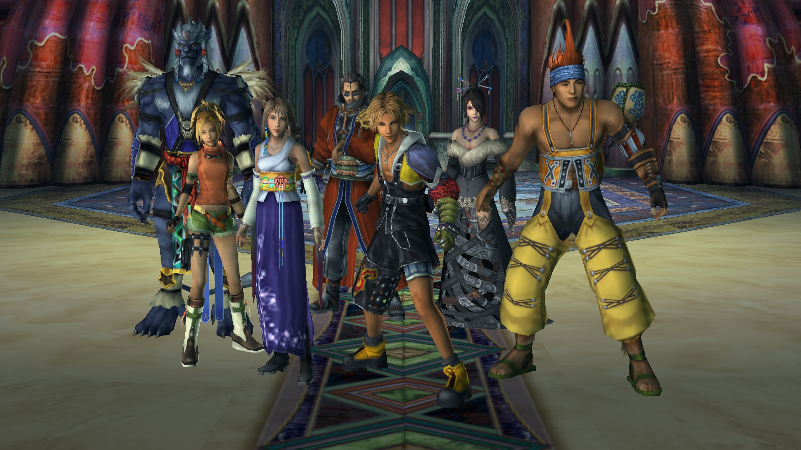
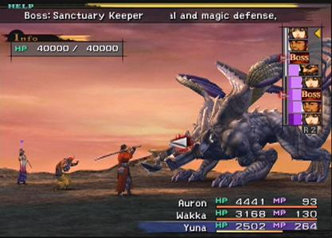
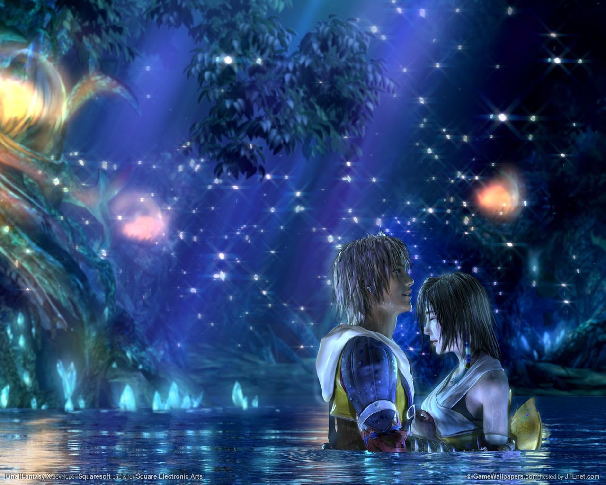

Written by Erica Workman
It's about a young man, Tidus (the main character) whose city (Zanarkan) gets attacked by this monster called Sin. Tidus is then met with a man, Auron, who claims that he is a friend of his father. Tidus' father left him and his mother a long time ago. Suddenly, Tidus and Auron get sucked inside Sin and Tidus finds himself 1,000 years into the furture. This future is a shocking one: Zanarkan, his home, is now only a destroyed ancient city and this new world called Spira is on the brink of destruction due to Sin. On his journey to find his way back home, Tidus meets a summoner named Yuna who is determined to save Spira. He joins her team in hopes to find a way to get home, back to his own time and maybe solve the puzzle as far as why his father left him.
Tidus: He is a young blitz ball star from Zanarkan: 1,000 years in the past. He's overly engergic and determined to help Yuna on her journey to fight Sin.
Yuna: She is a Summoner like her father before her. In case you don't know what a summoner is, they are the people who train to defeat Sin. The spirits give them what is call an Aeon and they can then summon Aeons to help them in their battles. All Yuna wants is for the people of Spira to be safe and happy again. She doesn't want everyone to live in fear and she will do anything even sacrifice her life if she has too.
Auron: He was a friend of both Tidus and Yuna's fathers. He fought alongside Brascra (Yuna's father) as he fought Sin the last time. Auron feels that it's his duty to look after Tidus and Yuna since he was so close to their parents.
Rikku: She is a fun and bubbly girl who people call an Albed. The Albed are a group of people who use machina to try to destroy Sin. Machina is basically machines. A lot of the people of Spira blame the Albed for Sin coming because they believe if they wouldn't have used machina Sin would be gone permanently. Some believe that Sin is their punishment for using machina.
Wakka: He is a good friend of Yuna's and the captain of his Besaid blitzball team. I know him as the surfer guy with the crazy red hair!
Lulu: She is also a good friend of Yuna's. Her and Wakka have been watching over Yuna since she was a little girl. Lulu is very good with black magic but she's very reserved.
Kimahri: He is from a distant tribe called The Ronso tribe. Kimahri left his tribe to be with Yuna because he wanted to protect her through her journey to fight Sin. He's not very talkative but I think he's adorable!
This game play is very different from most. Athough it does have some similar things like leveling up and basic fighting, its not like you have some guy run up to you and hit you with a sword and you're dead. Instead you are sent to a battle field and its more about strategy than being quick. For the most part everyone has time to think about their next move or what you want to do like: attack, magic, item, skills, etc. This is very important because there are certain bosses that have a countdown and when it reaches it's limit, you are dead or you are severely hurt so its good to have time to think about your next move. Now only three players are allowed on the battle field but there are seven you can play with. You can switch out characters if needed or what not, so you're not just limited to the three main characters that you choose up front.
Overdrives are awesome! When your red bar is filled then you will get what is called an overdrive. You get Overdrives depending on what setting you're on. Most of the time its when you are hit a lot or dying and your red bar will fill to the point you get an overdrive. Each overdrive is different depending on the person. Tidus has an overdrive called the slice and dice where he will hit the enemy over and over as fast and as hard as he can. This is when a character can hit for as much as they are able to at their level or just below it. Tidus, Auron and Kimahri are more of the physical attacks. Whereas Yuna, Rikku, and Lulu are more of magic users. Wakka is kind of in between. For example, Lulu's overdrive will cast as many spells as she can. Yuna's overdrive is very important. Since Yuna is the summoner, she can summon her Aeons for her overdrive and they will do a lot of damage. When you first start out, you will have Valefore as your Aeon.
There are five Aeons during the game the you will receive in order to fight Sin. The first one you get is Valefor from Besaid. Then you will go to certain temples and get the other four: Ifrit, Ixion, Shiva, and Bahumut. Each Aeon is very useful in their own way. Valefor deals with wind and bird like attacks. Ifrit is a demon of fire. Shiva deals with ice attacks. Ixion deals lighning based damage and Bahumut does a combination of all elements and physical attacks. All your Aeons can level up and they do so on their own, unlike your main characters, you have to level them up manually. Also you can teach your Aeons to learn certain things so they can be awesome in a fight. One more thing about Aeons, that I didn't know until I was more than half way through the game is: when you summon your Aeon, if you don't want them to die or you want to switch them out, you can! You don't have to leave your Aeons in battle, all you have to do is have Yuna dismiss them and you are back in the game with your three main characters!
Final Fantasy X is a long game with a long story but every minute of playing it is absolutely worth it! It's so much fun to play with the characters and I really connected with them even though our world has never been threatened before :) It's still a really good game to play. I highly recommend it to all. I know a few girls who have played it and loved it and I also know many, many guys who played it and loved it. So it's a win, win! Besides, you have to admit, if you've ever played it, the swords are awesome!
4.7 out of 5
4.87 out of 5
4 out of 5
4.5 out of 5
Posted November 16th, 2013